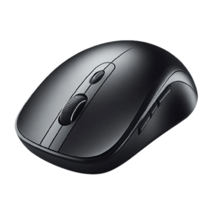

Company Overview
Precision Peripherals Ltd is a consumer electronics company specializing in the design, development, manufacturing, and distribution of computer peripherals and productivity accessories.
The company focuses on delivering innovative input devices, including wireless mice, keyboards, presentation tools, and desktop accessories for home users, professionals, gamers, and business environments.
By combining ergonomic design, advanced wireless technologies, and reliable performance, Precision Peripherals Ltd. develops products that improve productivity, comfort, and efficiency.
The company maintains strict quality control standards throughout the manufacturing process to ensure durability, precision, and user satisfaction.
Featured Product

Wireless Mouse Y1
Wireless Mouse Y1 is a versatile wireless mouse that combines precise tracking, ergonomic comfort, Bluetooth multi-device connectivity, high-precision optical tracking and long battery life of up to 250 hours to deliver reliable performance for work, study and everyday computing.
Latest News
Precision Peripherals Ltd Introduces Wireless Mouse Y1
Precision Peripherals Ltd announces Wireless Mouse Y1, a high-performance wireless mouse designed to provide precision, comfort, and seamless connectivity. Featuring advanced 2.4GHz wireless technology, Bluetooth multi-device connectivity, and up to 250 hours of battery life, the mouse is designed for office work, creative applications, study, and general computing.